SMART WIRELESS SOLAR POWER MANAGEMENT
-N. ARANGANATHAN
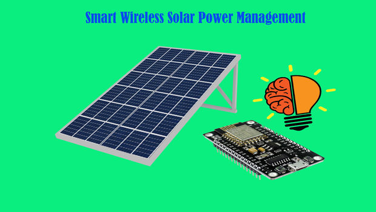
Hi.. Solar energy is abundant, pure form of energy. You could build your own solar system with the things you have in your home without wasting of much money and time. All you need is a bit of Enthusiasm and little time to experiment things.
In this we are going to see how to make use of the Home Inverter with simple Relay Logic Circuits. Here all you will learn to build your own solar panel circuit and understand the basics of what is happening in the relay circuits made in this and also to control and monitor via home wifi using ESP8266.

Solar Panel Facts and Details ( You May Move Ahead If You Know the Basics)
- Solar panel produces the Current due to the hitting of the photons from the sun on the silicon atoms.Thus in simple words SUN LIGHT FALLS ON THE SOLAR PANEL AND CURRENT is produced.
- The main thing to be noticed when considering the other form of Energy is that SOLAR PANEL is CURRENT SOURCE and not voltage source , thus by virtue of this the voltage will change depending on the load.
- Power of the solar panel is equal to the product of the Open Circuit voltage and the Short Circuit current.for example for 100 watts pannel,Voc=20V or 21V and Isc=5 A thus P=100 watts (approx) (at full bright sun)
- The Power produced will be directly propotional to the intensity of the Sun Light.There are two types of Solar Panel:
- Mono crystalline (high efficient)
- Poly crystalline ( comparatively less efficient)
Thus without wasting much time lets get on to the making.......!
Step 1: LIST OF COMPONENTS
I won't waste much time in the selection and construction of the solar panel, I don't want you to get bored any more. Thus I will move fast as possible ...!
LIST OF COMPONENTS:
- SOLAR PANEL: Depending on the need of yours you may select the solar panel.
If you plan to run the total loads completely in the Solar system, select the large sized panels, In this case I am using a 100 watts Solar Pannel.
- SOLAR CHARGE CONTROLLER:It is Very Essential as Solar panel is Current source. There are Two Types of Charge controllers namely :
PWM charge controllers - Cost effective, Commonly used ,slightly less efficient (Here I am using a PWM )
MPPT charge controllers- Costly, Used in large Solar Systems, High efficient
- Battery : Proper selection of the Battery for the correct backup of the Load.You may make use of the Home Inverter battery.
- Inverter: To run the AC (Alternating Current LOADS). Here you may use the home Inverter already installed
- WIFI CONTROLLER : ESP8266 nodemcu is the cheap and best controller to control the system in WIFI. Can be programmed via the Arduino IDE.
- RELAY :Electromechanical device which may act as the elctronic switch to control the Solar System. It consist of the electromagnet whenever the magnet is switched on the Switch is closed and viceversa. Thus it can be used to control the any higher voltages using the small microcontroller signal.
FOR FURTHER UNDERSTANDING OF THE TOPICS, Google it and be clear before going any further..... !
Step 2: MODES OF OPERATION
There are basically two modes of operation in this Solar connected Systems, They are :
- Manual Mode: As the name indicates it is controlled manually.But there are two different options for that they are :
Physical switches: Here it is controlled by the swtching ON and OFF by the conventional switches.
Relay Switch : Here the same operation is carried out using the wifi webpage to turn on and off the relay coils and monitored using ESP8266.
- Automatic Mode: Here it automatically runs depending on availability of the Solar and the Main Supply Power. Here the data can be monitored in the Webpage.
Step 3: MANUAL MODE
RELAY CONNECTIONS
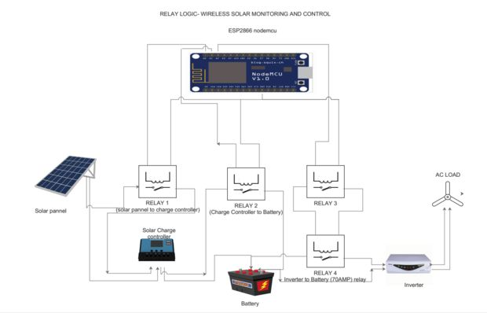
- Connect the solar panel to the Charge controller, Charge controller to the battery and Battery to Inverter through a relay as per the Circuit Diagram.
Relay must be of the correct specification. The main data to be noted is the relay coil voltage, Operating voltage and most importantly the current capacity of the relay.
Considerations :
- Solar panel to Charge controller maximum current =5 Amp ( so relay of 10 amp is enough)
- Charge controller to battery maximum current =5 amp (so relay of 10 amp is enough)
- Battery to Inverter maximum current =50 AMP ( relay of 70 or 80 amp is enough)
Here for many of you even me have the same question, how it can be 50 amps at most. The answer to this question is simple when we look at the basic power equation.
Power=Voltage *current
Consider 600va (watts)inverter (for basic understanding 4 tubelight 4 fan inverter)
Power taken form battery = Power delivered to the load ( taking Ideal condition)
Volatage of Battery (12Volts)* current form battery=600 va
12*I=600 =>I=600/12=50Ampere
Thus from the basic calculation we can come to conclusion that relay switch must withstand min 50 amp so a bigger relay is taken for the consideration and other important thing is that, this relay is activated by other normal relay.
Step 4: Practical Construction
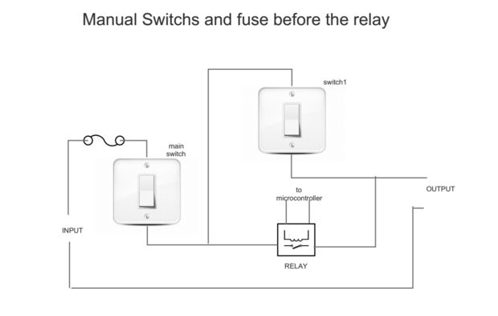
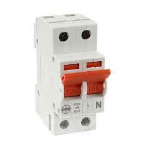
Note:
- Make a main normal switch before connecting to the relay. This will ensure the proper control of the system in case of any undesirable problems.
- Even though making a relay connections as per the diagram , it is also equally important to make the manual normal switches parallel to the relay as you cannot completely depend on the Micro controller for the operations as per the example.
- Make the proper fuse to avoid the short circuit and overload faults.
- In the connections between the inverter and the battery where we have seen there is the maximum amount of the current is passing, make sure to connect with the thick wire which resist, There use the MCB( miniature Circuit Breaker as the Switch) instead of the conventional switch.
Step 5: Controller-WIFI ESP8266 NODEMCU
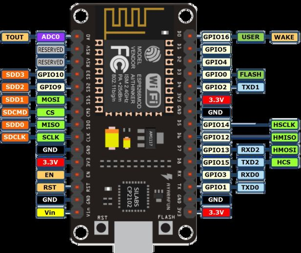
- Built in wifi control
- Easily programmable with arduino IDE
- Cheap and simple
Connect the Relay Outputs to the GPIO of the controllers. Selection of the Port is as per wish. Kindly make sure you connect it in the proper I/O terminals of the microcontroller and mention the same in the program.
Step 6: AUTOMATIC MODE
In this Mode of Operation, the controller automatically checks the power supply, solar input is present or not and relays are automatically made to ON and OFF depending on this.
The Basic Outline of the Automatic Mode of Operation is as follows:
Case1: SOLAR OFF and MAIN ON
Relay 1 OFF (solar to charge controller off)
Relay 2 OFF (Charge controller to Battery off)
Relay 3 ON (Battery to Inverter On)
Case2: SOLAR OFF and MAIN OFF
Relay 1 OFF (solar to charge controller off)
Relay 2 OFF (Charge controller to Battery on)
Relay 3 ON (Battery to Inverter On)
Case3: SOLAR ON and MAIN ON
Relay 1 ON (solar to charge controller on)
Relay 2 ON (Charge controller to Battery on)
Relay 3 OFF (Battery to Inverter off)
Case4: SOLAR ON and MAIN OFF
Relay 1 ON (solar to charge controller on)
Relay 2 ON (Charge controller to Battery on)
Relay 3 ON (Battery to Inverter On)
Thus programming these cases makes the micro controller to operate in the Automatic Mode.
All these are monitored in the webpage.
Step 7: INPUTS OR SENSOR
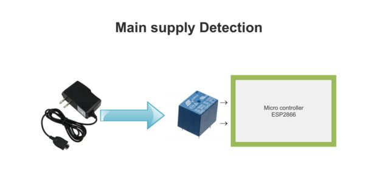
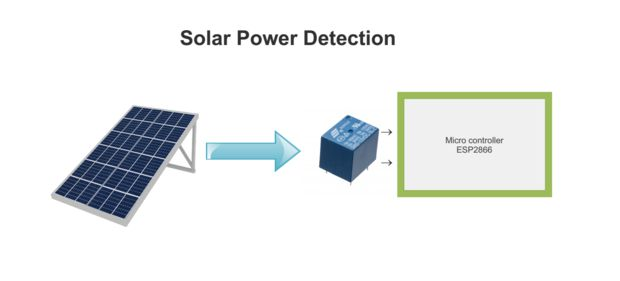
Before we step on to the programming of the Manual and the Automatic mode of Operation, We need to detuct two factors, they are :
- SOLAR on or off
- MAIN SUPPLY on or off
SOLAR SENSOR :
The presence of the solar can be detucted in various ways , there is no limitations, Some of the ways I suggest are as follows:
- Using of the LDR, Photodiode, Phototransistors to detect the presence of the Sun light.
- Using of the Voltage sensor (voltage bridge to measure the voltage in the microcontroller GPIO)
- Use of the Relay or Optocoupler
To make the system and the code simple I used the relay as the sensor.
I connected the relay (12V) coil to the solar input , So when the sunlight is bright enough to trigger the coil, relay is on switch will be closed, thus it can be taken as the presence of the solar energy.
MAIN SUPPLY SENSING:
If you are Electricaly strong you could make the sensor connection from the Main supply 220 volts by converting the 220 v ac to (5 or 6 v ac)(transformer)and to dc (rectifier) then connect it to the microcontroller input.
BUT IF YOU ARE LAZY LIKE ME ,I STRONGLY SAY THERE IS A VERY VERY SIMPLY MEASUREMENT SYSTEM
- Take a waste phone charger and plug it in the supply , the output is 5 volt dc which is more than enough to power up the relay coil. When switch is closed the input is obtained to the microcontroller.
Step 8: ARDUINO PROGRAMMING
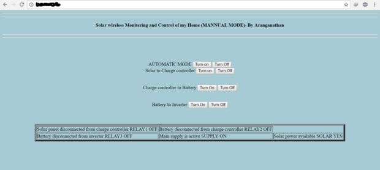
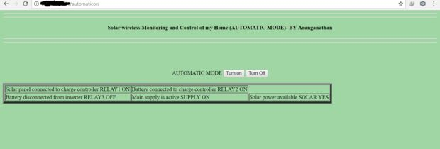
Thus we have come to the final part of this project ,
If you are familiar with the Ardunio programming , it is very easy step
- Give the wifi name and password in the begining of the program.
- Change the title and the headings as per your wish.
- The webpage is basically a html code written in the ardunio IDE, you may also edit and change if you are good in the website designing.
- After the code being uploaded on the serial monitor there will be the ip address where it must be connected.
- From the device connected in the same wifi open that ipaddrees then the webpage will be Opened showing the details.
Step 9: CONCLUSION
There are many things which can be added in this project. Some of the ideas which I have are as follows, you may also :
1. Usage of the Current sensor (hall effect sensor ) to measure the current and finally to show the status of the power utilized form the Solar Panel.
2. Making a IOT based control to the same system.
If you have any doubts or any further Ideas feel free to comment and be confident to EXPERIMENT it...!
thank you and be happy ,,.. God is with you... all the best
With love
(N.Aranganathan)
MY HOME PROJECT IMAGES ARE
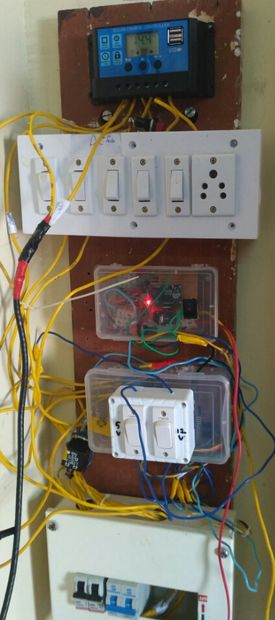
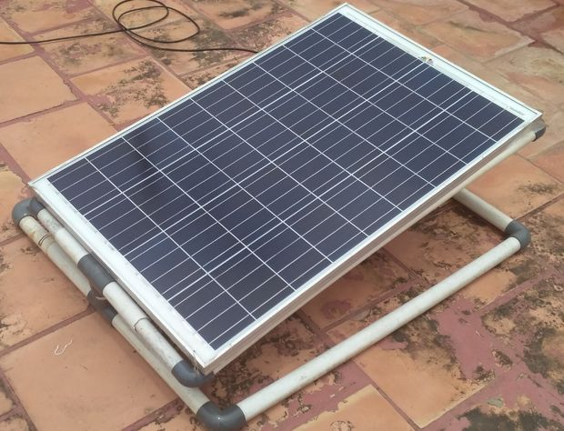